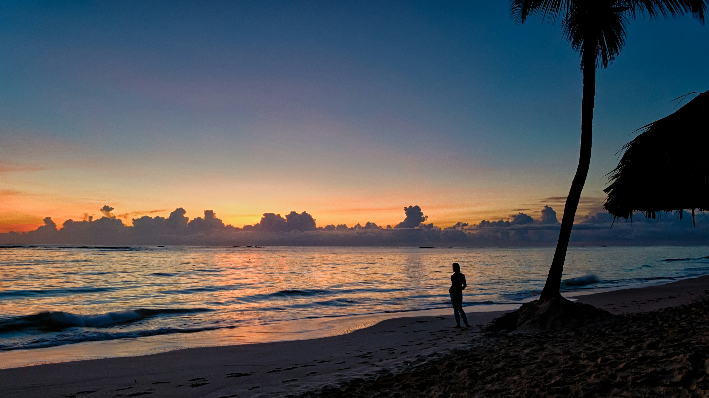
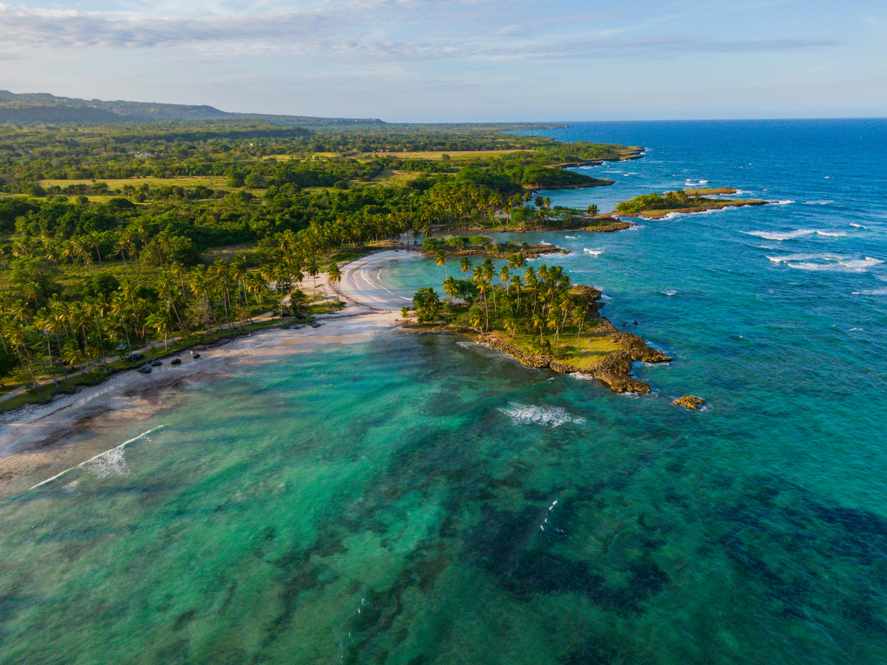
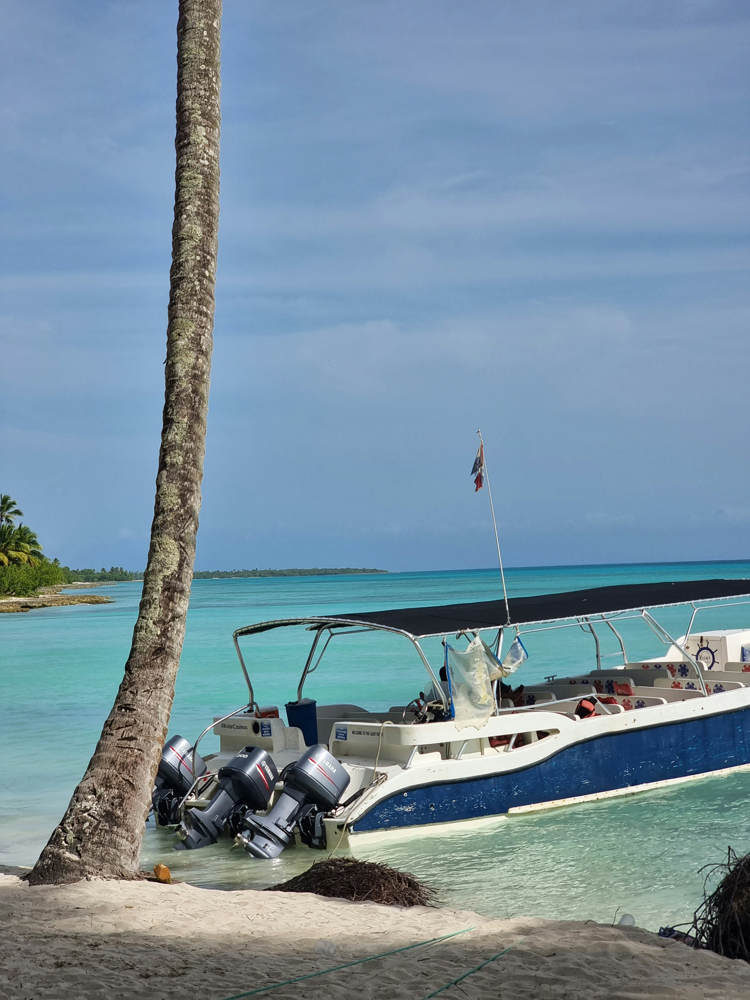

Explore Punta Cana
Punta Cana offers a variety of activities for visitors who want to relax, explore, or experience the Caribbean. Here are some popular things to do during your visit.
Bavaro Beach

Bavaro Beach is one of the most popular beaches in Punta Cana. Visitors can relax on the sand, swim in the warm Caribbean water, or simply enjoy the tropical scenery.
Saona Island

Saona Island is a popular destination for visitors looking to explore beyond Punta Cana. A trip to the island offers beautiful beaches, clear water, and an opportunity to experience the natural beauty of the Dominican Republic.
Boat Tours

Boat tours are another popular way to experience Punta Cana. Visitors can spend time on the water while enjoying the coastline and tropical surroundings.